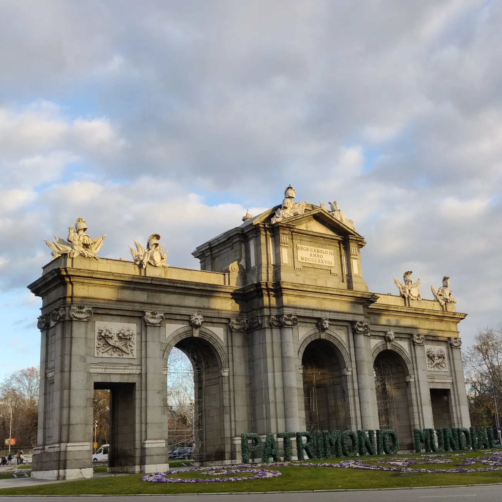

Vietin puoli vuotta vaihto-oppilaana Madridissa, koulussa nimeltä Escuela Técnica Superior de Ingeniería y Diseño Industrial. Vaihtossa ollessani sain tutustua paremmin IOT-laitteisiin sekä niiden ohjelmointiin. Tapasin aivan mahtavia uusia ihmisiä ja vierailin monissa lähi kaupungeissa.

Puerta de Alcala Suihkulähde Retiro parkissa Makaronitorni Espanjan tunnilla Suihkulähde Retiro parkissa